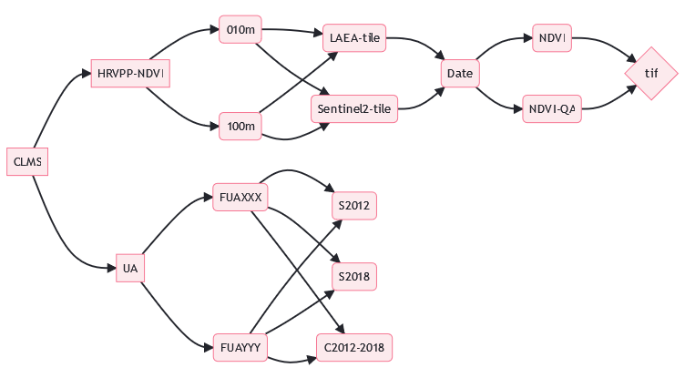

CLMS filenaming convention
guidelines
guidelines, filenaming, reference, CLMS, File Naming Standards, Naming Conventions, File Structure, File Management, ICT Guidelines, Best Practices, File Systems Compatibility, geodata storage, Metadata, Information Retrieval, Interoperability, File Extension, File Identifier
1 Preface and terminology
To uniquely identify a file on a host or device a string of characters is used, which in its full or absolute length consists of several distinct parts. If on a host whose exact name is completely specified such that it is unambiguous and cannot be mistaken for any other file on that host or device this defines a “fully qualified file name” or FQFN (see Section 2).
Unfortunately, terminology around file identifiers is not fully harmonized and can be quite confusing as e.g., the term ‘filename’ is commonly used for either the FQFN, but also the base name of a file with and without an extension.
For proper disambiguation a definition of all relevant terms as used in this document is given here first.
2 Fully Qualified File Name
A fully qualified file name or FQFN1 is a string of characters suited to entirely and uniquely identify a resource on a host or device. To fulfill its purpose the FQFN must specify device, path, file, and extension.
2.1 host or device (name)
String refers to the name of the server or machine on the network where the file is stored
2.2 path (name)
String identifying the folder and subfolder in which file is stored
2.3 (base or stem) filename
String identifying an individual file, without the suffix which is referred to as extension.
2.4 extension or suffix
String indicating a characteristic (file type) of the file contents or its intended use, usually found at the end of a file URI.
For the purpose of this document the term ‘filename’ relates to all characters of a FQFN preceding the first occurrence to the extension delimiter character ‘full stop’ or ‘period’ (“.”, ASCII 46) and not being preceded by the last occurrence of the path delimiter most commonly the ‘slash’ (“/”, ASCII code 47) or the ‘backslash’ character (“\”, ASCII code 92).
3 Filename and path length
The maximum FQFN length is determined by the file system. File systems and their upper limits are:
Windows (Windows 32 bit API2)
Maximum FQFN length: 260 characters (including drive letter, backslashes, and null terminator).
Maximum length of file name and file extension: 255 characters.
Linux (ext4)
Maximum FQFN length: 4096 characters.
Maximum length of file name and file extension: 255 characters.
macOS (APFS)
Maximum FQFN length: 1024 characters.
Maximum length of file name and file extension: 255 characters.
3.1 Recommendation on filename length
To ensure compatibility across all systems the smallest boundaries must be taken, i.e.,
260 characters maximum FQFN length as defined by Windows Windows 32 bit API .
255 characters for maximum length of file name and file extension.
To safely accommodate both, file name and path, it is generally recommended to keep file names well under these maximum limits and aiming for a:
4 The Filename
The following section will describe the rules and the constrains for the creation of a filename.
4.1 Filename - ASCII characters
Filenames are composed by ASCII3 characters. To ensure maximum interoperability, the following rules are implemented:
Alphanumeric (letters A-Z, ASCII 97-122, and numbers 0-9, ASCII 48-57): are allowed, whereby they are not handled as case sensitive.
Underscore (‘_’, ASCII 95): exclusively used for separating the different file naming fields (see xxx).
Hyphen (’-’, ASCII 45): exclusively used as separator within fields, between the field and the suffix.
Period (‘.’, ASCII 46): are not allowed. Note: the period is part of the file extension and there used to separate the filename from the file extension.
Space (‘ ’, ASCII 32): are not allowed.
4.2 Fields - the elements of a filename
Fields are standardized descriptive elements composing a filename. The filename is made of at least one but typically more than one field. Fields are separated by the field delimiter character which is underscore (‘_’). Each field can have zero, one, or more -suffixes. Suffixes are connected to the relevant field by a hyphen (‘-’) and must be placed after the field. A field suffix can be used to describe e.g.,
objects which exist only in relation with another object, e.g. the parameter ‘NDVI’ with the to it associated quality assessment parameter ‘NDVI-QA’.
product derivatives e.g., ‘SWI-030’, ‘SWI-040’
Fields may not be empty so that a field delimiter may not occur at the beginning or the end of a filename or twice in a row.
4.3 Filename - structural rules
The arrangement of fields is an essential part in the creation of a filename. The filename structure follows a predefined hierarchical order to ensure efficiency, consistency, and (machine) readability. A filename is subdivided in several categories, each of them addressing different purposes, and each of them composed of distinct and unique fields and eventually field-suffixes.
Each product or product group can have different composition schemata, i.e., using different categories or fields. The order of categories must be preserved, and the ’main’ category (see Section 4.3.1), are compulsory.
4.3.1 Filename category ‘Main’
The first category in a filename is called ‘main’ and shall ensure a it can unequivocally associated to a naming scheme. The naming scheme is a set of product or product groups specific rules for the composition of the filename. The main category must contain the necessary information to point to a given scheme. Each schema can have sub schemata.
4.3.2 Filename category ‘Spatial’ identifier
2 main spatial identifiers: AOI of the product, and AoI of the scene or image,
4.3.3 Filename category ‘Temporal’ identifier
Describes product specific elements such as acquisition or reference date, in case of composite images the composting period,….
4.3.4 Filename category ‘Production’ identifier
Describes file specific details on the production process and information provenance. Such as file version, processing mode, origin data, processing date…
4.3.5 Filename category ‘Parameter’ identifier
The category ‘Parameter identifier’ is the last field in a filename, and antecedent to the file extension. This category is reserved to layer level information of a file.
| Category | Field |
|---|---|
| Main | Producing entity |
| Main | Theme |
| Spatial identifier | Resolution |
| Spatial identifier | Tile |
| Spatial identifier | Coverage |
| Temporal identifier | (Acquisition) Date |
| Production identifier | Platform |
| Production identifier | Version |
| Production identifier | Processing date |
| Parameter identifier | Product |
| Parameter identifier | Parameter |
- 
-
Example decision tree {#fig-cap:classification tree}
Footnotes
NTFS supports approximately 32,767 characters. For compatibility reasons the limit imposed by the Windows 32bit API has been chosen.↩︎